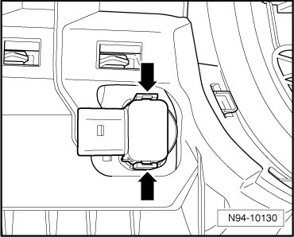
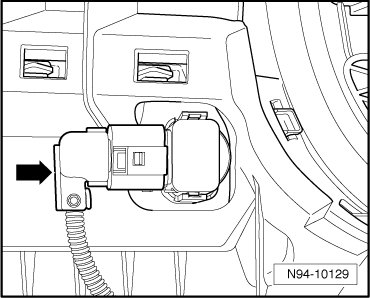
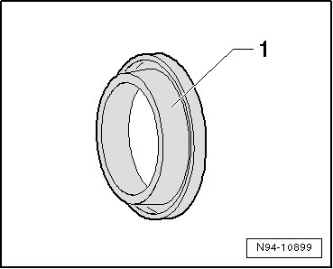
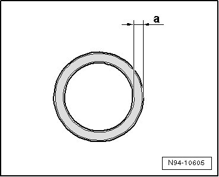

Front Parking Aid Sensors
Parking Aid System
Front Parking Aid Sensors
6 sensors are located in front bumper cover.
• Removal and installation of sensors for parking assistance, front, is performed in the same way for all sensors and is only described for one sensor.
Special tools, testers and auxiliary items required
• Release tool (T10345)
Removing
- Switch off ignition, switch off all electrical consumers and remove ignition key.
CAUTION!
The sequence of removal of the sensors must be strictly followed.
Otherwise, the sensor may be damaged. If the force exerted on a sensor is too large, hair cracks can develop which in turn can lead to sensor failure.
First remove the sensors from the brackets with the removal tool and then disconnect the sensor connectors.
- Remove front bumper cover Removal and Installation.
- Disengage retaining tabs - arrows - with Release Tool (T10345) and remove sensor with connector connected from bumper cover.

• Make sure that the sensor seal does not remain in bumper cover.
- Disconnect electrical connection - arrow -.

Installing
Install in reverse order of removal, noting the following:
CAUTION!
There is the risk of malfunction if an incorrect or damaged decoupling ring is installed.
Replace damaged decoupling rings and make sure the correct decoupling ring is installed.
- If necessary, replace sensor seal (decoupling ring).
- Check whether correct seal (decoupling ring) is installed. A black silicone ring - 1 - must be installed.

• Primarily, the decoupling ring has the function of decoupling the vibrations between sensor diaphragm and sensor bracket. It also centers the sensor diaphragm in the respective sensor bracket.
- Check the correct seating of the sensor. Dimension - a - must be evenly all around.
